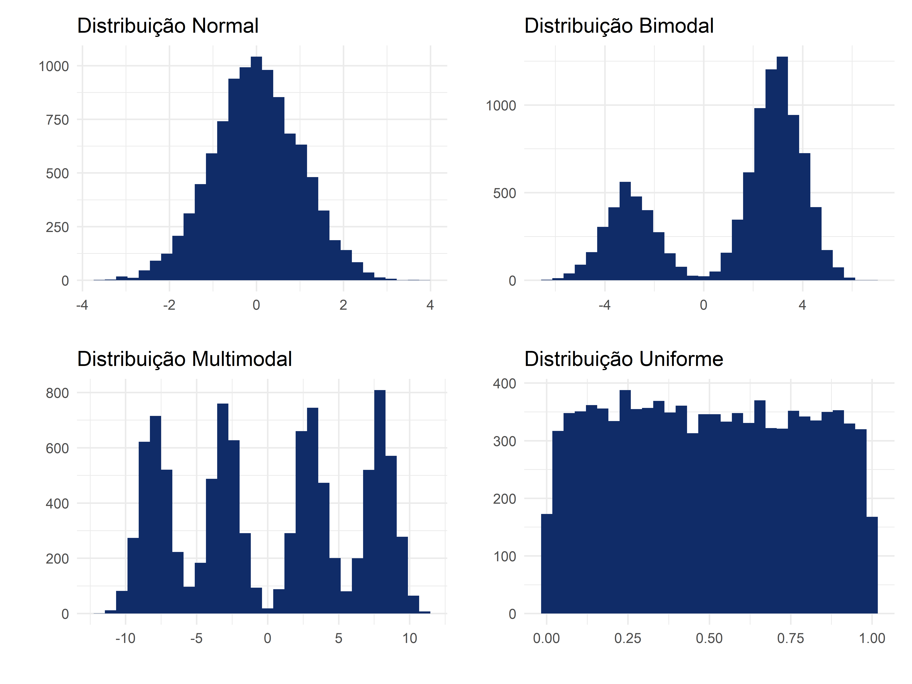
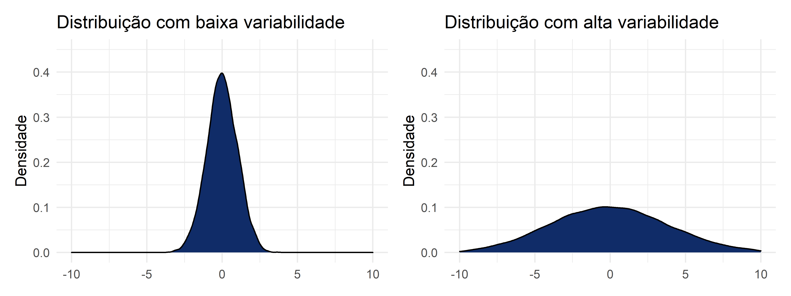
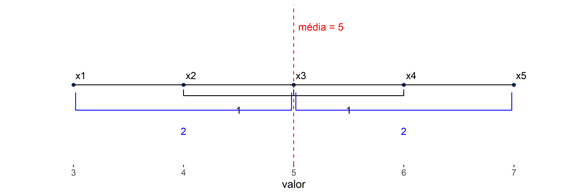
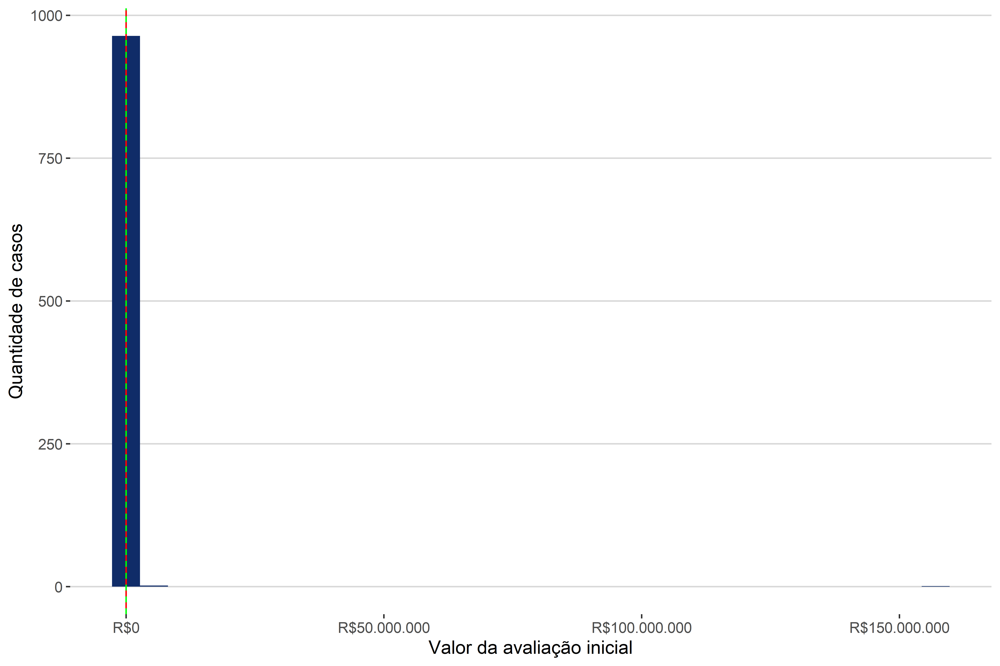

3 Estatísticas
No capítulo anterior, vimos algumas questões essenciais por trás do método quantitativo. Neste capítulo vamos olhar para a estrutura dos dados e como resumir as informações a respeito desses dados. Para tanto, o capítulo está dividido em duas seções: (a) descrição das observações; (b) descrição do conjunto de observações.
Na seção sobre as observações, vamos ver como as bases de dados devem ser estruturadas e os tipos de dados possíveis. Na seção sobre a descrição do conjunto das observações, vamos ver as medidas que podem descrever conjuntos de observações, a saber, as medidas de posição, as medidas de variabilidade e as medidas de associação.
Os exemplos deste capítulo foram extraídos de duas bases de dados:
- Base
consumo: A base traz dados extraídos da jurisprudência do segundo grau no TJSP. - Base
leiloes: A base leiloes traz dados que foram coletados no âmbito do Observatório da Insolvência - Fase 3 pela ABJ. Neste observatório, a ABJ coletou e analisou dados referentes a processos de falência distribuídos na Comarca de São Paulo, entre janeiro de 2010 e dezembro de 2020.
Você pode acessar essas bases de dados baixando, no R, o pacote abjData.
3.1 Olhando para as observações
O que queremos compreender nesta seção é a natureza das observações de uma base de dados. As observações correspondem às unidades amostrais, que podemos definir como “cada uma das partes disjuntas em que uma população é exaustivamente decomposta, para [que], do conjunto delas se façam extrações a fim de constituir uma amostra, ou estágio de uma amostra” (Bolfarine e Bussab 2005, 263). Em bases de dados, cada linha deve corresponder a uma unidade amostral; e cada coluna representa uma característica (também chamada de variável) dessa observação.
Na Tabela 3.1, há um exemplo de uma base de dados da ABJ. São algumas linhas e colunas da base de leiloes do Observatório da Insolvência de São Paulo - Fase 2. Basicamente, esta base diz respeito aos bens que são levados a alienações nos processos de falência no Estado de São Paulo. Nessa base, cada linha representa um item levado a alienação de um processo, ou seja, a unidade amostral é um item levado a leilão; e cada coluna representa uma informação a respeito desse bem, a saber, quem é o leiloeiro responsável pela venda do bem, quando o bem foi levado a leilão, qual era o valor de avaliação inicial desse bem; e qual é o valor pelo qual ele foi arrematado (o que fica em branco, quando o bem nunca foi arrematado).
| id_processo | descricao | id_leiloeiro | data_edital | vendeu | av_inicial | arrematado |
|---|---|---|---|---|---|---|
| 00268835820128260100 | Lote 1C: Máquina … | 5406 | 2015-10-05 | nao | 62000.0 | NA |
| 10033914920148260100 | Monitores Dell | 466 | 2015-03-06 | nao | 400.0 | NA |
| 10018294820168260451 | Prensa Hidraucila… | 29062 | 2020-01-24 | nao | 540.0 | NA |
| 00468773820138260100 | Lote 143: Televis… | 7633 | 2016-08-17 | sim | 300.0 | 178.31 |
| 10012206520188260299 | BOMBA CENTRÍFUGA … | 1748 | 2020-03-10 | nao | 4804.8 | NA |
| 00410345520108260114 | bancada de trabalho | 776 | 2014-02-24 | nao | 300.0 | NA |
| 10012206520188260299 | GUINCHO TIPO GIRA… | 1748 | 2020-03-10 | nao | 3225.6 | NA |
| 00268835820128260100 | Lote 159: Compres… | 5406 | 2015-10-05 | nao | 64800.0 | NA |
| 10488694620158260100 | Diversos itens de… | 5406 | 2018-04-03 | sim | 20.0 | 20.00 |
| 00268835820128260100 | Lote 1B: Geladeir… | 5406 | 2015-10-05 | nao | 11070.0 | NA |
Uma observação, então, como vimos, possui várias características. Todas essas características constituem variáveis a respeito da unidade amostral. O que precisamos ver, a seguir, são os tipos dessas características e as implicações de cada um dos tipos.
As variáveis podem pertencer a dois grupos: variáveis qualitativas (ou categóricas) ou variáveis quantitativas. As variáveis categóricas se subdividem ainda em nominais e ordinais; já as variáveis quantitativas podem ser do tipo discretas ou contínuas.
3.1.1 Variáveis qualitativas/categóricas
Todas as variáveis qualitativas representam algum tipo de categoria (por isso também chamamos essas variáveis de “categóricas”). Há dois tipos de variáveis categóricas, as nominais e as ordinais. As variáveis nominais são categorias de nomes, categorias sem ordenação possível. Já as variáveis ordinais representam categorias com algum tipo de ordenação universal, com algum ranking possível. O critério de distinção entre essas duas variáveis é a possibilidade de ordenação universal das respostas possíveis.
A seguir, temos alguns exemplos que discutem se determinadas variáveis categóricas são nominais ou ordinais.
Unidade Federativa: No Brasil, há 27 unidades federativas possíveis. É possível ordenar as unidades federativas, por exemplo, por ordem alfabética; ou até, se soubermos outras informações como PIB ou tamanho da população, podemos ordenar as UFs por algum critério outro. Apesar de essa variável ser ordenável, ela não pode ser ordenada a partir de um critério universal, ou seja, um critério intrínseco a ela mesma. Por isso, consideramos que UF é uma variável nominal (e não ordinal).
Assunto processual: Os assuntos processuais são dados pelas Tabelas Processuais Unificadas (TPUs)1 do CNJ. Por mais haja uma numeração. Os assuntos também não possuem nenhuma ordenação universal. Portanto, esta é uma variável nominal.
Valor de bens no leilão judicial (categorizado): Uma possível variável que pode existir em processos judiciais é uma classificação para o valor dos bens em um leilão. Podemos classificar os valores, por exemplo, como “insignificante”, “baixo”, “médio”, “alto”, “extravagante”. Neste caso, haveria uma ordenação intrínseca das categorias, sendo que “insignificante” é a categoria de menor valor e “extravagante”, a de maior valor. Assim sendo, esta variável é ordinal.
Resultado de uma sentença: Uma sentença pode ter, de forma simplificada, três resultados possíveis: totalmente procedente, parcialmente procedente e improcedente. É um modelo simplificado, pois, para determinadas pesquisas, pode ser interessante diferenciar sentenças com julgamento de mérito de sentenças sem julgamento de mérito, ou de sentenças homologatórias. Por ora, vamos pensar apenas nessas três categorias. A questão que se põe é se há alguma ordenação universal entre essas três categorias ou não?
Este caso pode gerar algumas dúvidas, pois poderíamos ordenar a sentença de tal forma que a sentença “totalmente procedente” fosse a mais valiosa, em relação à sentença “improcedente”. Entretanto, esse tipo de raciocínio pressupõe um valor intrínseco das sentenças, como se uma sentença “totalmente procedente” sempre fosse, de alguma forma, melhor do que uma sentença “improcedente”. O problema desse raciocínio é que, a depender do polo da parte, o valor da sentença é exatamente o oposto: para o réu, a sentença “improcedente” é a de menor valor, enquanto, para o autor, a sentença “totalmente procedente” é a de maior valor.
Existem ainda mais ramificações dos tipos de variáveis qualitativas, por exemplo, variáveis intervalares, ou variáveis-razão. Essas demais ramificações não possuem muito uso prático no Direito, então não vamos nos aprofundar nelas. Há somente uma ramificação que ainda nos interessa que são as variáveis binárias, ou como são chamadas também, as variáveis dummies. As variáveis binárias só assumem dois valores possíveis, o valor de sucesso (representado numericamente pelo número 1, ou pela condição TRUE) e o valor de fracasso (representado numericamente pelo número 0, ou pela condição FALSE). Essas variáveis são importantes pois, como veremos no Capítulo 5 é possível representar qualquer variável categórica em um conjunto de variáveis binárias.
3.1.2 Variáveis quantitativas
A outra grande categoria de variáveis é a de variáveis quantitativas. Esse grupo se caracteriza por ter variáveis de valores numéricos. Há uma classificação dicotômica importante a respeito desses valores. Existem variáveis quantitativas discretas e contínuas.
As variáveis discretas são caracterizadas por valores numéricos que formam um conjunto finito ou enumerável de números. Usualmente, as variáveis desse tipo resultam de alguma contagem. Já as variáveis contínuas são valores numéricos que pertencem ao conjunto dos números reais. O critério de distinção entre essas duas categorias é a nossa capacidade de fazer uma correspondência dos números com o conjunto dos números naturais (0, 1, 2, …).
A seguir, temos alguns exemplos se algumas variáveis são discretas ou contínuas.
Valor da causa: Em um exemplo anterior (no caso do valor dos bens dos leilões), estávamos tratando de valores também, mas estávamos tratando de valores agrupados formando categorias. Agora vamos falar dos valores brutos, individualizados, e não das categorias a que eles pertencem. O valor da causa pode assumir incontáveis valores, não sendo, portanto, um valor enumerável. Assim sendo, ele é uma variável contínua.
Quantidade de partes em cada polo: No caso de litisconsórcio ativo ou passivo, é possível contar quantas partes existem em cada polo. Essa informação pode ser relevante, por exemplo, ao se estudar direitos difusos e coletivos, pois pode ser importante saber quantas pessoas estão no polo ativo da demanda, para determinar se é uma demanda coletiva ou pseudo-coletiva2. A variável sobre a quantidade de partes em cada polo será do tipo discreta.
3.1.3 Considerações sobre os tipos de dados
Antes de prosseguir para as medidas desses dados, devemos fazer algumas considerações.
3.1.3.1 Consideração 1: Cuidados ao se representar numericamente variáveis categóricas ordinais
O primeiro ponto a se destacar é sobre a representação numérica de variáveis categóricas ordinais. Vamos usar o exemplo de uma proposta do Center for Court Innovation de Nova Iorque3. Uma das iniciativas desse centro foi tornar os tribunais de Nova Iorque mais “amigáveis”. Uma das técnicas propostas para tanto foram os Questionários de Satisfação sobre a prestação jurisdicional. A Tabela 3.2 resume algumas das perguntas do questionário elaborado pelo Centro.
| - | Concordo fortemente | Concordo | Neutro | Discordo | Discordo fortemente |
|---|---|---|---|---|---|
| O juiz compreendeu minha demanda | |||||
| O juiz levou a minha demanda a sério | |||||
| De forma geral, obtive o resultado esperado no tribunal | |||||
| Fui tratado com respeito pelo tribunal | |||||
| Fui tratado de forma justa pelo tribunal | |||||
| Eu pediria a ajuda ao tribunal no futuro, se necessário |
Ao aplicar um questionário desses, estamos produzindo dados. A aplicação de vários questionários sucessivamente levaria à produção de uma base de dados em que cada linha (unidade amostral) seria um respondente, e cada coluna seria uma das perguntas. Todas essas perguntas recebem como resposta o nível de satisfação (concordo fortemente, concordo, neutro, discordo e discordo fortemente), sendo, portanto, variáveis de natureza categórica ordinal, pois há claramente uma ordem entre essas respostas.
O que queremos é discutir uma proposta de substituição dessas respostas para uma forma numérica. Como há uma ordem entre essas respostas, será que poderíamos olhar para elas de forma numérica? A transformação seria a seguinte:
- Concordo fortemente: 1
- Concordo: 2
- Neutro: 3
- Discordo: 4
- Discordo fortemente: 5
Essa transformação deve ser feita com cuidado. Por um lado, esse tipo de alteração não altera a ordenação dessas respostas. Entretanto, por outro lado, a representação numérica das categorias ordinais adiciona uma informação aos dados que não é verdadeira: a intensidade. O que estamos dizendo é que os números guardam, não só uma ordenação universal entre si, assim como as variáveis categóricas ordinais, mas eles guardam uma relação de intensidade entre si, algo que as variáveis categóricas ordinais não possuem. Assim, enquanto podemos dizer que o número 2 é o dobro do número 1, não podemos estabelecer essa relação entre as categorias “concordo” e “concordo totalmente”.
3.1.3.2 Consideração 2: As variáveis dummies
A segunda consideração que queremos fazer diz respeito à transformação das categorias nominais em variáveis dummies. Vamos tomar outro caso como exemplo para esta discussão.
No projeto que a ABJ realiza, em parceria com o CNJ, sobre adoção, tentamos auxiliar os pretendentes a escolherem o perfil da criança fornecendo a eles uma informação importante: o tempo que irá demorar adotar uma criança a depender do perfil escolhido para ela. Perfis mais restritivos em geral demoram mais tempo do que perfis mais permissivos. A questão é deixar claro que características importam para a mudança do tempo e o quanto cada característica importa para o tempo. Uma das variáveis é a variável de tp_etnia. Essa variável indica qual é a preferência de etnia preferida dos pretendentes em relação às crianças a serem adotadas. Há 6 respostas possíveis: A (de “amarelo”), B (de “branco”), I (de “indígena”), N (de “negro”), P (de “pardo”) ou S (de “sem preferência”). Essas categorias não possuem um critério de ordenação universal, assim sendo, a variável tp_etnia é do tipo categórico nominal. Temos um exemplo dessa base na Tabela 3.3. Os valores usados são fictícios, por questões de sigilo da base.
| id_pretendente | tp_etnia |
|---|---|
| 1082 | I |
| 1083 | P |
| 1084 | B |
| 1085 | P |
| 1086 | S |
| 1087 | S |
| 1088 | N |
| 1089 | P |
| 1090 | N |
| 1091 | I |
| 1092 | A |
A questão de que queremos tratar é como transformar a tp_etnia em um formato dummy? Para realizar essa transformação, nós transformamos cada uma das etnias em uma variável que recebe apenas as respostas 0 ou 1. Mas temos que tomar um cuidado muito importante: a quantidade de variáveis que criamos é sempre o número de categorias (\(n\)) menos 1, ficando \(n-1\). No caso, como são 6 categorias possíveis, criamos n-1 variáveis, isto é, 5 variáveis. A base resultante está na Tabela 3.4.
| id_pretendente | tp_etnia | A | B | I | N | P |
|---|---|---|---|---|---|---|
| 1082 | I | 0 | 0 | 1 | 0 | 0 |
| 1083 | P | 0 | 0 | 0 | 0 | 1 |
| 1084 | B | 0 | 1 | 0 | 0 | 0 |
| 1085 | P | 0 | 0 | 0 | 0 | 1 |
| 1086 | S | 0 | 0 | 0 | 0 | 0 |
| 1087 | S | 0 | 0 | 0 | 0 | 0 |
| 1088 | N | 0 | 0 | 0 | 1 | 0 |
| 1089 | P | 0 | 0 | 0 | 0 | 1 |
| 1090 | N | 0 | 0 | 0 | 1 | 0 |
| 1091 | I | 0 | 0 | 1 | 0 | 0 |
| 1092 | A | 1 | 0 | 0 | 0 | 0 |
A questão importante dessa consideração era justamente chamar a atenção para o fato de que a quantidade de dummies criadas a partir da categorias é \(n-1\). Isso não é uma escolha arbitrária, mas tem uma razão de ser. Mais para frente do livro, veremos que, se criássemos \(n\) categorias, ao invés de \(n-1\), teríamos um problema chamado dependência linear. Entretanto, por hora, de forma simplificada, podemos simplesmente afirmar que a categoria que foi deixada de fora, isto é, a categoria que não se transformou em dummy pode ser presumida.
Vejamos na Tabela 3.4 que a categoria deixada de lado foi “S” (ou “sem preferência”). Entretanto, conseguimos identificar um pretendente que não possui preferência por nenhuma etnia quando todas as dummies são iguais a 0. Assim, se A = 0; B = 0; I = 0; N = 0; e P = 0, então teríamos (caso essa categoria existisse) que S = 1. Dizer que S = 1 equivale a dizer que todas as outras categorias são iguais a 0. Justamente por haver essa fungibilidade entre a representação de S = 1 com tudo = 0 que não criamos exatamente \(n\) dummies, mas \(n-1\). O que deve ficar de lição é que a categoria deixada de lado está presumida pela resposta às demais dummies; ela estará presente sempre que todas as outras categorias forem 0.
3.2 Olhando para o conjunto das observações
Acima, estávamos discutindo as observações em si (unidades amostrais) e as informações que as caracterizam (variáveis). O que vamos falar a seguir é, não de uma única observação, mas do conjunto de várias observações. Vamos olhar, então, não para uma única linha, mas para um conjunto de linhas de uma base. A diferença da explicação anterior para a que se seguirá seria a de dizer, por exemplo (voltando ao exemplo da base de leilões do Observatório de Falências de São Paulo), que um bem específico foi vendido pelo dobro do seu preço de avaliação ou dizer que os bens, em média, são vendidos a 80% do seu preço de avaliação.
Uma primeira pergunta que podemos fazer para dar maior tecnicidade à explicação é o que esses conjuntos de dados representam? Se cada observação representava uma unidade amostral, então agora podemos dizer que o conjunto dessas unidades amostrais é a amostra em si. E para tirar informações e afirmar coisas sobre esse conjunto de observações, usamos estatísticas de resumo.
Estatísticas de resumo, como o próprio nome diz, resumem informações de grupos. Então, no lugar de olharmos para cada uma das observações individualmente, vamos olhar para uma única informação que irá dizer algo sobre as observações tomadas em conjunto. Esse “algo” que podemos falar sobre o conjunto das observações depende do tipo de variável para que estamos olhando. Se estamos olhando para variáveis categóricas (e, neste caso, pouco importa se são variáveis nominais ou ordinais), podemos resumir a sua frequência e proporção; já, se estamos olhando para variáveis contínuas, podemos olhar para as medidas de centro, de variabilidade e de posição do conjunto.
3.2.1 Medidas de resumo para variáveis categóricas
Não existe um repertório de medidas muito amplo para resumirmos variáveis categóricas. Isso se deve ao fato de que essas variáveis não possuem uma natureza numérica. Então, basicamente, para resumir estas variáveis precisamos transformá-las em números. A forma de fazer isto é uma: a contagem.
Por meio da contagem nós conseguimos tabular as respostas das variáveis categóricas, contando a sua frequência e, posteriormente, a proporção e porcentagem de cada categoria. A informação principal que temos é a frequência, pois é a partir dela que podemos pensar nas demais informações. Para além da frequência absoluta, temos também a frequência acumulada, a proporção, a proporção acumulada e a porcentagem.
A frequência é simplesmente a contagem de cada categoria. A frequência acumulada é a contagem de uma categoria somada com as categorias anteriormente contadas, de modo que a contagem da categoria final seja a soma total de todas as categorias. A proporção é a representação da contagem de uma categoria em relação a todas as observações. A proporção acumulada segue a mesma ideia da frequência acumulada, sendo a proporção de cada categoria, somada à proporção de todas as categorias anteriormente calculadas. Por fim, a porcentagem é simplesmente a proporção vezes 100.
Como exemplo, podemos olhar para a base de dados da ABJ sobre leilões nas falências em São Paulo, em que encontramos a Tabela 3.5.
| Modalidade | Frequência | Frequência acumulada | Proporção | Proporção acumulada | Porcentagem |
|---|---|---|---|---|---|
| leilao | 965 | 965 | 0.965 | 0.965 | 96.5% |
| pregao | 33 | 998 | 0.033 | 0.998 | 3.3% |
| proposta fechada | 2 | 1000 | 0.002 | 1.000 | 0.2% |
| total | 1000 | NA | 1.000 | NA | 100% |
A variável que está sendo resumida é a variável “modalidade”, que indica se a falência foi ou não foi decretada. Há três respostas possíveis: “leilão”, “pregão”, ou “proposta fechada”. Ao olharmos para todos os processos, podemos então realizar a contagem de cada uma dessas categorias. A partir da contagem, criamos a coluna de “frequência”. A partir da frequência, nós criamos as próximas colunas, a saber, a frequência acumulada, a proporção, a proporção acumulada e a porcentagem. Note que as colunas “acumuladas” (isto é, as colunas de frequência acumulada e de proporção acumulada) não possuem um “total”, pois o total já está expresso na última categoria.
3.2.2 Medidas de resumo para variáveis quantitativas
No caso das variáveis quantitativas, por elas já terem natureza numérica, há mais medidas de resumo possíveis. Vamos dividir a explicação em dois tipos de medidas: medidas de centro, medidas de variabilidade.
3.2.2.1 Medidas de centro
O termo “medidas de centro” pode nos confundir. A nomenclatura pode nos induzir a pensar que essas medidas indicam o “meio” do gráfico, mas isso não é verdade. O “centro” a que se referem essas medidas é o ponto mais “típico” do conjunto em análise. São três medidas que estão nesta categoria: a média, a mediana e a moda.
3.2.2.1.1 Média
A média é um conceito intuitivo, que designa basicamente a soma das observações dividida pelo total de observações. O símbolo da média é \(\bar{x}\) (x-barra). O que queremos ver a seguir é a fórmula da média. Por mais que o conceito seja simples e intuitivo, precisamos formalizar um pouco mais o sentido da média. A fórmula é a que se segue:
\[\bar{x} = \frac{x_1+x_2+\dots+x_n}{n}=\frac{1}{n}\sum_{i=1}^n x_i\]
A fórmula principal é \(\bar{x} = \frac{1}{n}\sum_{i=1}^n x_i\), mas precisamos compreender os elementos dessa fórmula. Vamos começar pelo símbolo \(\sum\). Esse símbolo é a letra grega sigma (maiúscula), que na matemática usamos para representar somatórios. O somatório é uma notação que resume uma série de adições em sequência. Assim, dando um exemplo fácil, podemos representar a seguinte soma \(4+8+12+16+20\) como \(\sum_{k=1}^5 4k\). Vamos entender direito como que essa notação matemática representa a conta de adição.
O somatório tem três parâmetros: a notação que está embaixo dele (no caso, \(k=1\)); a notação que está em cima dele (no caso, \(5\)); e a notação que está na frente do sigma (no caso, \(4k\)).
A começar pelo que está na frente do sigma (\(4k\)), isso indica uma operação, que é \(4\) vezes \(k\). Essa operação irá se repetir para \(5\) valores de \(k\), sendo que o primeiro valor é \(k = 1\) e o último valor é \(k = 5\). De onde tiramos essas últimas informações? Das notações em cima e embaixo do \(\sum\). Embaixo do \(\sum\) encontramos o valor inicial de \(k\); e em cima encontramos o valor final de \(k\). Para cada valor que \(k\) assumir, teremos uma expressão para somar. Então a primeira expressão é quando \(k = 1\), ou seja, \(4 \times 1 = 4\). Na segunda expressão, \(k = 2\), ou seja, \(4 \times 2 = 8\). A terceira expressão é \(4 \times 3 = 12\); a quarta, \(4 \times 4 = 16\); e a quinta e última, \(4 \times 5 = 20\). Então nós pegamos o resultado das 5 expressões e as somamos, resultando em \(4\) (resultado da expressão quando \(k = 1\)) + \(8\) (resultado da expressão quando \(k = 2\)) + \(12\) (resultado da expressão quando \(k = 3\)) + \(16\) (resultado da expressão quando \(k = 4\)) + \(20\) (resultado da expressão quando \(k = 5\)), ou simplesmente \(4+8+12+16+20\).
Então o \(\sum\) (e todos os elementos que o acompanham) indica a soma de todas as observações. Na fórmula da média, há uma diferença importante: no lugar do \(k\), temos o \(x_i\). Acontece que o \(i\) não é um número exatamente como funcionava com o \(k\), ele é apenas um índice. Precisamos, então, verificar o que é \(x_i\).
Voltemos à base de leilões, para pegar a variável valor de avaliação. Essa é uma variável quantitativa contínua. Pegando apenas as 10 primeiras observações dessa variável, temos os seguintes dados, resumidos na Tabela 3.6.
| Descrição | Valor de avaliação inicial |
|---|---|
| Volkswagem, modelo Santana, placa BPF-3434, cor azul renanavam 420.289.666 | 4934 |
| Vigas de Ferro para estruturas do barracão | 81000 |
| VIGA I DIM. 180 X 6.000 MM COM TALHA PNEUMÁTICA CAP. 1 TON | 1921 |
| VIBRADOR “QUIMIS” PARA PENEIRAS | 235 |
| ventilador de parede Delta Diâmetro 70 CM | 70 |
| Ventilador de parede | 234 |
| Veiculo ford Carrier | 2000 |
| vazo | 30 |
| Vasos - peso estimado de 90 a 130 kg | 7500 |
| vários fios eletricos | 0 |
A partir desse exemplo, podemos compreender o que significa \(x_i\). Para cada \(i\) diferente temos uma posição de \(x\). Assim, por exemplo, \(x_1\) será o valor de avaliação inicial do bem \(1\), ou seja, o valor do Volkswagen, de R$ 4.934,00. Podemos reescrever a tabela da seguinte forma:
| Índice | Descrição | Valor de avaliação inicial |
|---|---|---|
| \(x_1\) | Volkswagem, modelo Santana, placa BPF-3434, cor azul renanavam 420.289.666 | 4934 |
| \(x_2\) | Vigas de Ferro para estruturas do barracão | 81000 |
| \(x_3\) | VIGA I DIM. 180 X 6.000 MM COM TALHA PNEUMÁTICA CAP. 1 TON | 1921 |
| \(x_4\) | VIBRADOR “QUIMIS” PARA PENEIRAS | 235 |
| \(x_5\) | ventilador de parede Delta Diâmetro 70 CM | 70 |
| \(x_6\) | Ventilador de parede | 234 |
| \(x_7\) | Veiculo ford Carrier | 2000 |
| \(x_8\) | vazo | 30 |
| \(x_9\) | Vasos - peso estimado de 90 a 130 kg | 7500 |
| \(x_10\) | vários fios eletricos | 0 |
Compreendendo o que significam cada um parâmetros do somatório, bem como com interpretar o índice, podemos voltar para a fórmula da média.
\[\bar{x} = \frac{1}{n}\sum_{i=1}^n x_i\]
Estamos, por enquanto, olhando para este elemento da fórmula \(\sum_{i=1}^n x_i\). O que podemos concluir do significado disso? Vamos destrinchar com os elementos que vimos até agora. A somatória de \(\sum x_i\) significa que vamos somar todos os elementos \(x_i\). Essa soma será feita a partir do primeiro elemento do conjunto, que é \(x_1\) (por isso, embaixo do sigma tem \(i = 1\)), até o último elemento do conjunto, que é \(x_n\). No caso, se temos 10 bens, então nosso \(n = 10\).
Compreendido o somatório da fórmula, falta apenas o \(\frac{1}{n}\). Basicamente, isso indica que devemos dividir o resultado do somatório pelo total de observações. O \(n\) que encontramos nessa parte é o mesmo \(n\) que está em cima do sigma. Então, no caso dos bens, nós somariamos o valor de avaliação dos 10 bens e depois dividiríamos o total resultante dessa soma por \(10\), finalizando assim, o cálculo da média.
Com isso, a fórmula da média está completa. Apesar de o conceito ser intuitivo, a sua representação matemática é um pouco mais complexa. Mas essa complexidade se mostra como uma ótima oportunidade para explicarmos um pouco sobre notação matemática. Compreender e operar fórmulas matemáticas ajuda a trabalhar com os conceitos matemáticos conforme eles ficam mais complexos.
3.2.2.1.2 Mediana
Outra medida de centro importante é a mediana. A mediana é outro conceito intuitivo, mas menos conhecido. Literalmente, a mediana designa exatamente o número que está no meio do conjunto. Para encontrar este número, precisamos ordenar os números em ordem crescente. Uma vez encontrada esta ordem, há duas situações possíveis que podem acontecer. Se a quantidade de observações (\(n\)) for ímpar, o número exatamente ao meio será a mediana; se a quantidade de observações (\(n\)) for par, pegamos os dois números no centro e fazemos a média entre eles.
Em conjuntos ímpares, como encontramos o número que está exatamente ao centro? Ou seja, qual é a fórmula genérica para encontrarmos todos os números do meio em todos os conjuntos ímpares? Imaginemos um conjunto de 7 elementos. Intuitivamente conseguimos dizer que o elemento no meio será o 4º elemento, pois há 3 elementos à esquerda do 4º elemento e mais 3 elementos à direita dele. A partir disso, podemos pensar que 4 (isto é, a posisção do número central) é a metade de 8; e que 8 é um número acima de 7 (o número total de elementos do conjunto). Assim, a fórmula que temos é \(\frac{n+1}{2}\). Então o índice do elemento central será \(x_{\left(\frac{n+1}{2}\right)}\)
\[\text{md}(\boldsymbol{x}) = x_{\left(\frac{n+1}{2}\right)}, \text{se } n \text{ ímpar}\]
Em conjuntos pares, não existe nenhum número exatamente no centro. Se tivermos, ao invés de 7 observações, 8, não teremos nenhum elemento que, caso seja escolhido, divida o conjunto entre duas partes idênticas. Por exemplo, a metade de 8 é 4; então se pegarmos o 4o elemento, o que acontecerá? Haverá 3 elementos à esquerda deste elemento, e mais 4 elementos à sua direita. O 4º elemento, portanto, não pode ser a mediana. O mesmo problema acontece se escolhermos o 5º elemento, pois teremos 4 números à sua esquerda e mais 3 números à sua direita.
Como fazer então para encontrar a mediana neste caso? Basicamente, vamos, no exemplo, pegar o 4º e 5º elementos e fazer a média aritmética entre eles. Pensando de forma abstrata, o 4º elemento é \(\frac{n}{2}\); e o 5º elemento é o próximo número da sequência em relação ao elemento do meio, ou seja, ele é \(\frac{n}{2}+1\). Para designar então esses dois elementos temos as seguintes notações: \(x_{\left(\frac{n}{2}\right)}\) e \(x_{\left(\frac{n}{2}+ 1\right)}\). A média aritmética entre esses dois elementos é simplesmente a soma entre eles dividido por dois. Assim, temos a seguinte fórmula para a mediana em conjuntos pares:
\[\text{md}(\boldsymbol{x})=\frac{1}{2}\left(x_{\left(\frac{n}{2}\right)} + x_{\left(\frac{n}{2}+1\right)}\right)\] Vale fazermos um esclarecimento importante a respeito da diferença da média para a mediana. A mediana é preferível à média em muitas situações. Isso decorre de uma propriedade da mediana: ela é robusta. Robustez é uma palavra que indica a suscetibilidade de um valor aos seus extremos. Vamos dar dois exemplos para deixar isso claro.
Pensemos em um conjunto abstrato com os seguintes números:
10 11 12 13 14 15 16 17 18 19 20Este conjunto contém \(n = 11\) observações. Assim, a média é \((10+11+12+13+14+15+16+17+18+19+20)/11 = 15\). A mediana é exatamente o número central, pois o conjunto é ímpar, ou seja, a mediana é \(15\) também.
Agora olhemos para um segundo conjunto.
10 11 12 13 14 15 16 17 18 19 2000A única diferença é o último elemento, ou seja, o número \(x_{11}=2000\). Temos \(11\) observações ainda. Neste caso a média é \((10+11+12+13+14+15+16+17+18+19+2000)/11 = 195\); mas a mediana continua sendo exatamente a mesma, ou seja, \(15\), porque \(15\) continua sendo o elemento do meio.
A partir deste exemplo podemos compreender o que significa dizer que uma medida é mais “robusta” do que outra. A mediana, neste caso, é mais robusta, pois ela se afeta menos com os valores extremos do que a média, ela é mais resistente a valores desviantes.
3.2.2.1.3 Moda
Feita essa consideração, podemos falar da última medida de centro, a moda. A moda indica simplesmente o valor mais frequente do conjunto. Encontrar a moda pressupõe que saibamos todos os valores que aparecem no conjunto, bem como a sua contagem. O valor cuja contagem é maior será o valor da moda. Se o conjunto tiver apenas um valor com a maior contagem, ele será “unimodal”; se houver dois valores com a mesma contagem, então teremos um conjunto “bimodal”; se houver muitos valores, então será “multimodal”. Se não houver nenhum valor que se destaque, então o conjunto será “uniforme”. Por mais que este capítulo não se dedique a estudar gráficos ainda, neste caso, vale a pena demonstrar como cada tipo de conjunto (unimodal, bimodal, multimodal e uniforme) se comporta em termos gráficos. Vemos isso na Figura 3.1.

3.2.2.2 Medidas de dispersão
Para as variáveis quantitativas, além de falarmos dos valores mais “típicos” (ou “centrais”, como convencionamos chamar), podemos falar também em como esses valores variam, ou como esses valores se dispersam ao longo do conjunto de observações. Com um exemplo simples, percebemos como a informação da medida central isoladamente não é capaz de contar a história inteira dos dados.
Grupo A (variável X): 3 4 5 6 7
Grupo B (variável Y): 1 2 5 7 9
Grupo C (variável Z): 5 5 5 5 5
Grupo D (variável W): 1 5 5 6 8
Grupo E (variável V): 3 5 5 6 6Ao calcularmos a média desses 5 grupos, percebemos que todos possuem uma média 5,0. Entretanto, claramente os conjuntos são diferentes. A diferença que estes conjuntos apresentam não pode ser captada pelas medidas de centro. É por esta razão que utilizamos as medidas de dispersão. Há quatro medidas importantes aqui: amplitude, desvio médio, desvio padrão e intervalo inter-quartis, também chamado de IQR.
3.2.2.2.1 Amplitude
A amplitude indica, basicamente, o espectro dentro do qual as observações variam. Para calculá-la basta identificar o valor máximo do conjunto, bem como o seu valor mínimo. A diferença entre os dois números é a amplitude.
\[A(\boldsymbol x)=\max(\boldsymbol x)-\min(\boldsymbol x)\]
Podemos retornar ao exemplo da base de leilões. O menor valor de avaliação que encontramos nesta base é de R$ 0,00 (zero reais). Esse valor é até frequente na base, pois vários bens arrecadados não possuem valor algum. O maior valor da base é R$ 157.000.000,00, que representa o valor de um imóvel. Assim, a amplitude dessa variável é o valor mínimo subtraído do valor máximo, ou seja, \(157.000.000,00 - 0\), ou seja, a amplitude dessa variável é de R$ 157.000.000,00. A interpretação deste valor é que todas as observações estão dadas dentro de um intervalo de cento e cinquenta e sete milhões de reais.
A amplitude é uma medida simples de ser calculada, entretanto, ela não consegue indicar a relação da dispersão com as medidas centrais. Em seu lugar, as medidas de dispersão mais frequentemente usadas são o desvio médio e o desvio padrão. Vamos, a seguir, realizar uma explicação sobre as duas medidas, pois elas estão muito próximas.
3.2.2.2.2 Medidas de dispersão ao redor da média: desvio padrão e desvio médio
As duas medidas que estudaremos a seguir indicam a dispersão dos valores em torno da média. Ou seja, tomando a média (e não qualquer medida de centro) como referencial, essas duas medidas indicam como os dados variam ao redor do centro. Algumas perguntas importantes que essas medidas nos ajudam a compreender são: As observações estão concentradas ao redor da média? Ou elas estão dispersas e longe umas das outras? A Figura 3.2 mostra dois exemplo de conjuntos de dados com a mesma média, mas com dispersões das observações em torno da média totalmente diferentes. No primeiro gráfico, as observações estão concentradas; no segundo, elas estão dispersas. Observamos, ao compararmos estes dois gráficos, como que as medidas de centro não conseguem explicar as distribuições dos conjuntos muito bem, quando isoladas, mas quando combinadas com as medidas de dispersão, conseguimos descrever muito melhor os conjuntos.

Antes de entrarmos nas notações matemáticas, vamos pensar, intuitivamente como essas medidas de dispersão que se referem à média funcionam. Já deve ter ficado claro que a primeira informação essencial que temos de ter em mãos é a média. Sem o valor da média, não conseguimos calcular o desvio médio nem o desvio padrão. Uma vez que temos o valor médio, qual é o próximo passo?
Para responder a isso, imaginemos o seguinte conjunto de dados, cuja média é 5, conforme a Tabela 3.8.
| Índice | Valor |
|---|---|
| \(x_1\) | 3 |
| \(x_2\) | 4 |
| \(x_3\) | 5 |
| \(x_4\) | 6 |
| \(x_5\) | 7 |
Uma pergunta que podemos fazer sobre esse conjunto, mas que ainda não fizemos, é: o quão distante da média está cada uma das observações? A partir disso, podemos discutir, por exemplo, que número está mais próximo da média \(5\), \(x_4=6\) ou \(x_5=7\)? Para responder a essa pergunta, vamos olhar para a Figura 3.3:

Pela figura, fica claro que a distância entre \(x_4\) e a média é menor do que a distância entre \(x_5\) e a média. São essas distâncias que queremos computar. Se calcularmos esse valor para todas as observações, então teremos uma informação a mais a respeito desse conjunto: teremos o desvio de cada observação em relação à média. Com isso, conseguimos completar o conjunto acima conforme a Tabela 3.9.
| Índice | Valor | Desvio |
|---|---|---|
| \(x_1\) | 3 | 2 |
| \(x_2\) | 4 | 1 |
| \(x_3\) | 5 | 0 |
| \(x_4\) | 6 | 1 |
| \(x_5\) | 7 | 2 |
Uma vez que sabemos como cada observação se desvia da média, falta sabermos uma última informação relevante. Lembrando que estamos falando de medidas sobre conjuntos de informações, é possível perceber que a informação da diferença é uma informação de cada observação e não do conjunto como um todo. Percebemos isso porque para cada índice (\(x_1\), \(x_2\), \(x_3\), \(...\)), temos uma única medida de desvio. A partir disso, o que podemos nos perguntar é: como eu trato das diferenças do conjunto, e não de cada observação? A essa pergunta a resposta é simples: basta fazer a média dos desvios, ficando \((2+1+0+1+2)/5 = 1,2\).
Dessa forma podemos dizer que o nosso conjunto tem média 5 e que ele tem um desvio médio de 1,2. Essa informação que encontramos (de 1,2 de desvio médio), ainda não explica a variância, mas ela dá uma noção de que tipo de informação a variância leva em conta, porque a lógica por trás da variância é a mesma por trás do desvio médio.
Até aqui vimos apenas uma noção intuitiva do que significam as medidas de “dispersão ao redor da média”. Usamos como fio condutor para essa explicação a medida do desvio médio. Vamos, a seguir, formalizar o pensamento intuitivo, bem como desenvolver a outra medida restante o desvio padrão (e veremos que para chegar no desvio médio, precisamos explicar a variância antes).
A começar pela formalização matemática do desvio médio, é preciso notar uma operação matemática importante que fizemos ao longo da explicação. Quando comparamos a distância de cada observação em relação à média, usamos a Figura 3.3 para verificar essas medidas. Com isso, construímos a Tabela 3.9. O procedimento matemático que está por trás dessas etapas é o módulo. A notação do módulo de \(x\) é dada por:
\[ |x| = \left\{\begin{array}{rl}x,&\text{ se }x\geq 0,\\ -x,&\text{ se } x < 0\end{array}\right. \]
O módulo é usado para calcular distâncias até certos pontos. Essas distâncias nunca podem ser negativas. O que queremos são valores absolutos, ou seja, queremos apenas o número que indica a distância, sem considerar o sinal (positivo ou negativo).
Então o que fizemos quando construímos a Figura 3.3 foi representar graficamente o módulo das diferenças entre o valor e a média. Em seguida, computamos essas distâncias na Tabela 3.9. Em termos matemáticos, fizemos a seguinte operação:
\[ desvio = |x-\bar{x}| \]
A partir dessa operação, podemos formalizar um pouco o pensamento. O que construímos até aqui foi a notação matemática do conceito de desvio. Essa notação representa o módulo da diferença entre a observação \(x\) e a média do conjunto \(\bar{x}\).
Devemos notar que calculamos os desvios para cada observação. A partir disso, somamos todos os desvios. Essas etapas (de calcular um desvio para cada observação, seguido de somar cada um desses desvios em um “desvio total), são representadas matematicamente por meio do somatório:
\[ desvio\:total = \sum_{i=1}^n |x_i-\bar{x}| \]
Lembrando da notação do somatório, ele significa que para cada valor de \(x_i\), em que \(i\) pode assumir os valores de \(1\) a \(n\), iremos fazer o módulo da diferença entre o valor e a média, somando todos os resultados.
Por fim, o procedimento final que realizamos na explicação intuitiva foi calcular a média do desvio total, isto é, pegamos o desvio total e dividimos pelo total de observações. De modo mais formalizado, o que fizemos foi a seguinte conta:
\[ dm(\boldsymbol{x}) = \frac{1}{n}\sum_{i=1}^n |x_i-\bar{x}| \] Esta é a fórmula do desvio médio de \(x\), ou simplesmente, \(dm(x)\).
Para seguirmos adiante com a explicação do desvio médio (e da variância), tem uma questão importante que devemos nos fazer: porque devemos somar o módulo das diferenças e não apenas as diferenças, ou seja, porque a conta para o desvio médio não foi simplesmente \(\frac{1}{n}\sum_{i=1}^n (x_i-\bar{x})\)?
A resposta para essa pergunta não é trivial. Se a gente calculasse o desvio total pela soma das diferenças (e não pela soma do módulos das diferenças), depois esbarraríamos em um problema ao calcular a média desse desvio. O problema é que a média das diferenças é sempre zero. A prova matemática disso é:
\[\frac{1}{n}\sum_{i=1}^n(x_i-\bar x)=\frac{1}{n}\sum_{i=1}^n x_i - \frac{1}{n}\sum_{i=1}^n \bar x = \bar x - \frac{n}{n}\bar x = \bar x - \bar x = 0\]
Não há necessidade de se compreender toda a demonstração de que a média das diferenças é sempre igual a 0 (mas vale a pena tentar!). O que realmente precisamos entender é simplesmente que se calculássemos cada um dos desvios, sem levar em consideração o módulo, teríamos uma série de números negativos na nossa conta e esses números negativos iriam “anular” os números positivos, resultando em zero sempre. Podemos ver o resultado disso na Tabela 3.10.
| Índice | Valor | Desvio | Diferença |
|---|---|---|---|
| \(x_1\) | 3 | 2 | -2 |
| \(x_2\) | 4 | 1 | -1 |
| \(x_3\) | 5 | 0 | 0 |
| \(x_4\) | 6 | 1 | 1 |
| \(x_5\) | 7 | 2 | 2 |
| total | NA | 6 | 0 |
Então, como estávamos falando, para seguirmos adiante na explicação do desvio médio (e da variância), precisávamos entender o problema de não considerar o valor absoluto (ou seja, o valor em módulo) dos números. O problema são os valores negativos. Se, para calcular o desvio médio o problema dos números negativos é resolvido pelo módulo, veremos na variância e no desvio padrão que a forma de resovler este problema é outra. No lugar do módulo, calculamos a diferença ao quadrado. Apenas trocando o módulo pelo quadrado do fórmula do desvio médio, encontramos a fórmula da variância, conforme observamos na seguinte equação:
\[ var(\boldsymbol{x}) = \frac{1}{n}\sum_{i=1}^n (x_i-\bar{x})^2 \]
Quando elevamos uma diferença ao quadrado, por mais que a diferença seja negativa, o quadrado sempre será positivo, de modo que podemos observar na Tabela 3.11 que na coluna Diferença ao quadrado não há nenhum número negativo.
| Índice | Valor | Desvio | Diferença | Diferença ao quadrado |
|---|---|---|---|---|
| \(x_1\) | 3 | 2 | -2 | 4 |
| \(x_2\) | 4 | 1 | -1 | 1 |
| \(x_3\) | 5 | 0 | 0 | 0 |
| \(x_4\) | 6 | 1 | 1 | 1 |
| \(x_5\) | 7 | 2 | 2 | 4 |
A diferença da variância para o desvio médio é simplesmente a forma como eles lidam com o problema dos valores negativos. Dessa forma, a mesma intuição que desenvolvemos para o desvio médio pode ser usada para compreender a variância, com a diferença que a variância apresenta os resultados distorcidos por estarem ao quadrado. Entretanto, o significado da variância ainda representa algo muito similar ao do desvio médio: a variância apresenta a dispersão dos valores ao redor da média.
Por causa dessa distorção que a variância gera ao elevar os números ao quadrado, pode parecer que o desvio médio é preferível em relação a ela. Acontece que o uso do módulo no cálculo da medida gera alguns problemas matemáticos em algumas operações. Assim, não usamos nem o desvio médio (por usar o módulo) e nem a variância (por estar um pouco distorcida pelos números ao quadrado). No lugar dessas medidas, fazemos uma “correção” da variância. Já que a variância altera a unidade de medida para a unidade ao quadrado, podemos voltar à dimensão anterior simplesmente fazendo a raiz quadrada da variância. Afinal de contas, a raiz quadrada é a operação matemática inversa de elevar ao quadrado. Quando realizamos este procedimento final, de tirar a raiz quadrada da variância, obtemos o chamado desvio padrão (e note a sutileza nas palavras, pois estamos falando de desvio padrão e não mais de desvio médio). A fórmula do desvio padrão é representada da seguinte maneira:
\[ dp(\boldsymbol x) = \sqrt{var(\boldsymbol x)} = \sqrt{\frac{1}{n}\sum_{i=1}^n\left(x-\bar x\right)^2} \]
Fica bem claro pela fórmula do desvio padrão que ele é simplesmente a raíz quadrada da variância. Exatamente por guardar essa relação intrínseca com a variância, é que precisávamos explicá-la antes de explicar o desvio padrão.
Com esta última fórmula, conseguimos compreender o significado e as notações matemáticas das duas medidas de dispersão ao redor da média que nos propusemos a discutir: o desvio médio e o desvio padrão (definindo, no meio do caminho, a variância). Dessas medidas, as mais mais utilizadas são a variância e o desvio padrão. O desvio padrão é mais popular do que o desvio médio por ser mais sensível a valores atípicos (o que geralmente é desejável aqui) e por ter algumas propriedades matemáticas de interesse na modelagem estatística. Não trataremos dessas propriedades por enquanto.
Vamos antes de finalizar essa explicação das medidas que indicam a dispersão dos dados em relação à média, dar um exemplo para dar concretude dessas medidas, pois os conceitos apresentados são difíceis. O exemplo é o mesmo que vem acompanhando a gente nesta seção: o valor de avaliação dos bens alienados em processos de falência. A base usada é a base leiloes. Dessa vez, não vamos olhar apenas para 10 observações, mas para 483 observações da base (de um total de 1000 observações). Realizamos uma filtragem dessa base com fins didáticos apenas, para ficar mais fácil de calcular. A base se encontra na Tabela 3.12.
| descricao | valor_avaliacao_inicial |
|---|---|
| bem 1 | 126 |
| bem 2 | 286 |
| bem 3 | 420 |
| bem 4 | 432 |
| bem 5 | 750 |
| bem 6 | 1660 |
| bem 7 | 1900 |
| bem 8 | 1949 |
| bem 9 | 2500 |
| bem 10 | 3700 |
Recomendamos fortemente que você tente calcular as duas medidas de dispersão desse conjunto. A média do valor de avaliação é R$ 1.372,30. Em primeiro lugar, tente calcular as diferenças de cada um desses bens em relação à média. O resultado esperado está resumido na Tabela 3.13
| descricao | valor_avaliacao_inicial | diferenca |
|---|---|---|
| bem 1 | 126 | -1246.3 |
| bem 2 | 286 | -1086.3 |
| bem 3 | 420 | -952.3 |
| bem 4 | 432 | -940.3 |
| bem 5 | 750 | -622.3 |
| bem 6 | 1660 | 287.7 |
| bem 7 | 1900 | 527.7 |
| bem 8 | 1949 | 576.7 |
| bem 9 | 2500 | 1127.7 |
| bem 10 | 3700 | 2327.7 |
A partir destes valores, podemos calcular o desvio médio, a variância e o desvio padrão. Tente calcular por sua conta o valor do desvio médio, da variância e do desvio padrão. Os resultados devem ser:
| Medida de dispersão | Valor |
|---|---|
| desvio médio | 969.50 |
| variância | 1229532.41 |
| desvio padrão | 1108.84 |
Como interpretamos esses resultados? Primeiro, devemos nos lembrar de que a média de avaliação de cada bem é R$ 1.372,30, pois essas três medidas dizem respeito à distribuição dos resultados ao redor da média. Uma vez que temos a média, então podemos dizer que:
Pelo desvio médio, podemos dizer que os valores variam em média R$ 969,50 ao redor da média. Isso significa que os valores estão pouco concentrados e muito dispersos. Percebemos isso porque o valor do desvio médio é muito próximo ao valor da média.
Pela variância, podemos dizer que os valores ao quadrado variam em média 1.229.532,41 reais ao quadrado ao redor da média. Essa interpretação é difícil de ser feita, por isso olhamos para o desvio padrão.
Pelo desvio padrão, podemos dizer que os valores variam em média R$ 1.108,84 ao redor da média. Vemos também como o desvio padrão acaba se assemelhando ao valor do desvio médio. Como comentado anteriormente, o desvio padrão tende a considerar mais os valores atípicos e por isso é um pouco maior que o desvio médio, mas os valores são próximos. Aqui, novamente, percebemos que os valores estão dispersos, jáq ue o desvio padrão e a média são próximos.
Vale notar que, na interpretação desses resultados, essas medidas sempre indicam dispersão ao redor da média.
3.2.2.2.3 Interquartile range (IQR) e os quantis empíricos
Há uma última medida de variabilidade que é o interquartile range (IQR). Podemos dizer que os IQRs estão para o desvio padrão assim como a mediana está para a média. Se bem lembrarmos, a média padece de um problema: ela não é robusta, ou seja, ela é influenciável pelos valores extremos. Em seu lugar, podemos usar a mediana para indicar o centro da distribuição, pois essa medida é mais robusta. Da mesma forma, como a variância e o desvio padrão dependem da média para serem calculadas, elas também são medidas pouco robustas. O IQR, então, pode ser visto como uma medida de dispersão robusta. Mas para compreendermos o IQR, devemos compreender o que são quantis empíricos.
Um quantil empírico é um valor que divide um conjunto de dados em determinada proporção. Por exemplo, a mediana é o quantil empírico que indica o valor que divide o conjunto de dados em 50%. Existem outros quantis empíricos, como o quantil de 25%, que é um valor que divide o conjunto de observações entre 25-75, ou seja, 25% das observações estão antes deste valor e 75% das observações estão depois deste valor.
Existe um quantil empírico para cada porcentagem que se queira. Representamos, matematicamente, cada percentil como \(q(p)\), em que \(p\) é a proporção desejada. Por exemplo, o quantil de 25% é o \(q(0,25)\); o quantil de 78% é o \(q(0,78)\); o quantil de 1% é o \(q(0,01)\), e assim por diante.
Alguns quantis possuem nomes específicos. Se dividirmos os quantis em 100, cada quantil será um “percentil”. E se dividirmos o conjunto em 10 partes iguais, cada quantil será um “decil”. Ainda, se dividirmos os quantis em 4 partes iguais, cada quantil será um “quartil”. Esta última divisão é uma das divisões mais importantes. Apesar de dividirmos o conjunto em 4 partes iguais, e apesar de o nome desse quantil ser “quartil” (o que, novamente, remete à ideia de 4 partes), há apenas 3 quartis:
- quartil inferior, \(q(0,25)\): Divide o conjunto no 25%, ou seja, um quarto dos dados estão abaixo deste quartil.
- mediana, \(q(0,50)\): Divide o conjunto no 50%. É a mediana.
- quartil superior, \(q(0,75)\): Divide o conjunto no 75%, ou seja, apenas um quarto dos dados estão acima deste quartil.
Chamamos essas três medidas de quartis, não porque são 4 valores, mas porque conseguimos dividir o conjunto dos dados em 4 partes iguais a partir destes valores. A primeira é calculado como a amplitude entre o ponto mínimo, \(q(0,00)\), e o primeiro quartil, \(q(0,25)\); a segunda, entre o segundo quartil, \(q(0,25)\) e a mediana, \(q(0,50)\); a terceira, entre a mediana, \(q(0,50)\) e o terceiro quartil, \(q(0,75)\); e a quarta, entre o terceiro quartil, \(q(0,75)\) e o valor máximo, \(q(1,00)\). Assim temos:
- Conjunto 1: \(q(0,25) - q(0,00)\)
- Conjunto 2: \(q(0,50) - q(0,25)\)
- Conjunto 3: \(q(0,75) - q(0,50)\)
- Conjunto 4: \(q(1,00) - q(0,75)\)
A partir dos quartis (isto é, os quantis que dividem o conjunto em 4 partes iguais), podemos construir a medida do IQR. Enquanto os quartis indicam pontos no conjunto de observações, o IQR indica uma amplitude. Entretanto, ao contrário da amplitude geral que vimos acima, que é construída a partir do valor mínimo, \(q(0,00)\), e do valor máximo, \(q(1,00)\), o IQR é construído pela amplitude entre o quartil inferior, \(q(0,25)\), e o quartil superior, \(q(0,75)\).
Justamente por excluir os valores extremos (que estão no conjunto 1 e no conjunto 4, ou seja, entre o valor mínimo e o quartil inferior e entre o quartil superior e o valor máximo), dizemos que o IQR é uma medida mais robusta do que o desvio padrão para indicar a dispersão do conjunto.
Como exemplo final, podemos voltar à base de leilões. Dessa vez, vamos olhar para a base completa (as 1000 observações), ao invés de alguma amostra dela. Temos os seguintes quantis empíricos da variável sobre o valor de avaliação
| Quantil | Valor |
|---|---|
| min(0%) | 0 |
| quartil inferior (25%) | 104 |
| mediana (50%) | 500 |
| quartil superior (75%) | 3755 |
| máximo (100%) | 157000000 |
Para calcular o IQR, basta subtrair o quartil inferior do quartil superior, ou seja 3755-104, que resulta em 3651. A interpretação desse resultado é os valores centrais da amostra se distribuem dentro de uma amplitude de R$ 3.651,00. Ou seja, 50% dos valores estão distribuídos dentro de um intervalo de R$ 3.651,00. É interessante comparar o IQR com a amplitude. A amplitude, como vimos, é igual a R$ 157.000.000,00, ou seja, todos os valores da base estão dentro de um intervalo de R$ 157.000.000,00, mas desse intervalo inteiro, 50% dos valores (e não quaisquer 50% dos valores, mas a metade dos valores centrais) estão apenas em um intervalo de amplitude R$ 3.651,00. Isso indica como que a população está muito dispersa, pois há uma concentração de metade dos valores em um pequeno intervalo, e uma outra metade distribuída em um grande intervalo. Por mais que ainda não tenhamos estudado gráficos, é útil neste momento compreender para o que estamos falando de forma visual (Figura 3.4).

Observamos neste gráfico uma altíssima concentração em valores, que, por causa da escala, estão representados no 0. Não é que, de fato, os valores sejam 0, mas é que, dentro de uma escala que vai até 150 milhões, a faixa de valores em que se concentram os dados é muito pequena (50% estão na faixa entre R$ 104,00 e R$ 3.755,00).